9 Introduction to EEG
What is EEG?
EEG (Electroencephalography) is a method used to measure population-level neural activity in real-time with millisecond resolution in a non-invasive manner by affixing electrodes to the scalp. While EEG is used medically to assess neurological conditions such as epilepsy and sleep disorders, it has also been used in research for over 100 years to understand the brain’s response to different cognitive conditions. In our lab, we use EEG to assess the brain’s response to complex real-world scenes.
EEG signals are electrical potentials generated by the summed activity of large populations of neurons, primarily reflecting postsynaptic currents in dendrites. These signals, typically in the microvolt range, are recorded at the scalp using an electroencephalogram (EEG). Unlike the rapid, all-or-none spikes known as action potentials, the postsynaptic potentials in dendrites are slower and more sustained, making them more amenable to detection by EEG, which is sensitive to synchronized activity across cortical regions.
Basic Methodology
Electrodes and their Placement
EEG machines vary in the number of electrodes they use. Research-grade machines typically have electrode numbers that follow powers of two: 32, 64, 128, and 256-electrode systems are common. How many electrodes does a system need? Is more necessarily better? In part, this depends on your research question. In our lab, machine learning applications, benefit from more electrodes, so 128 is good for us. In general, the fewer electrodes a system has, the easier it is to set up an experiment. This is because each electrode needs to get a good electrical connection with the scalp (measured as impedance).
Where do these electrodes go on the scalp? Most researchers do not have to worry about this because electrodes are often placed on a fabric cap that is centered on the participant’s head. Electrode placement follows the international [10-20 system](https://en.wikipedia.org/wiki/10%E2%80%9320_system_(EEG), a set of standardized electrode locations, based on 10% and 20% distances between two anatomical landmarks: the nasion (the indentation at the bridge of the nose, in between the eyes), and the inion (the most protruding part of head at the back of the skull).
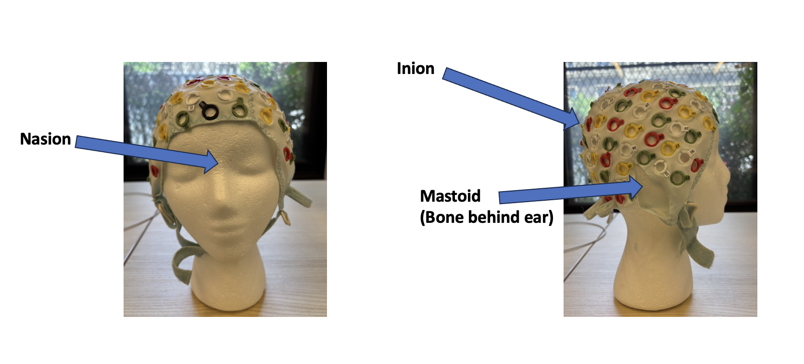
(VCL, 2025)The image above shows an anatomical map of the nasion and inion.
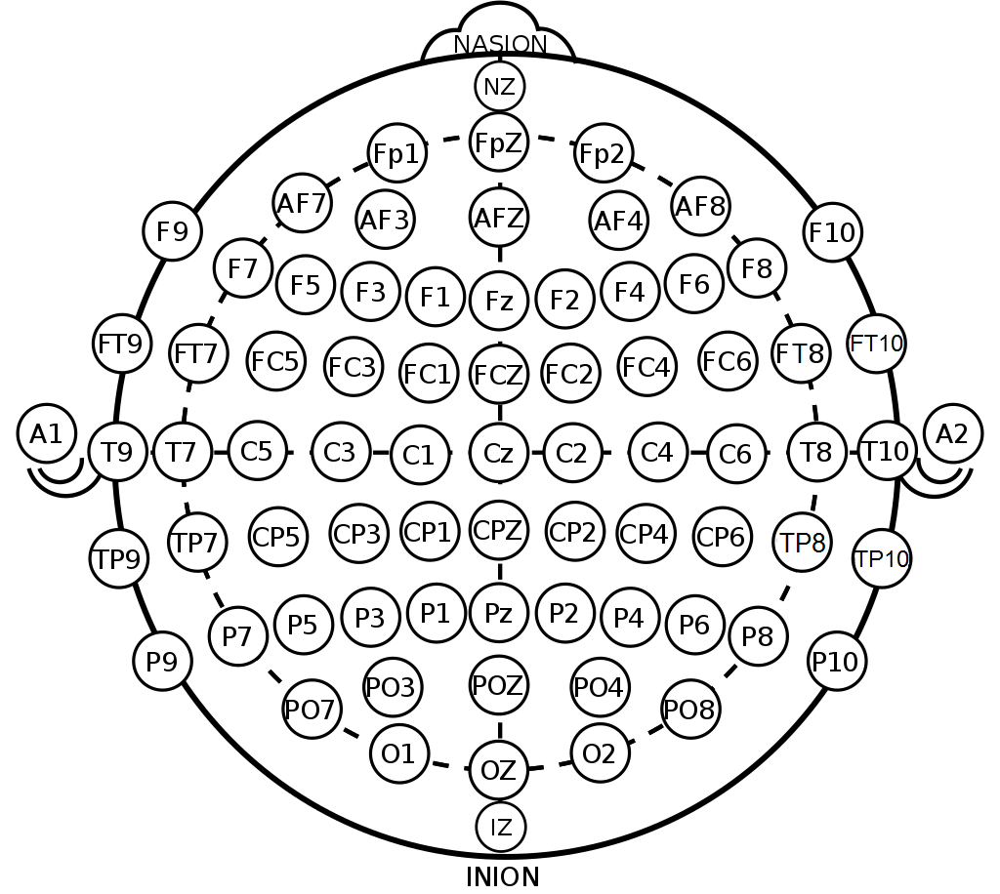
(Oxley, 2017)The above is a visualization of the International 10/20 Electrode Placement system. Different regions of the brain are represented with different letters, roughly corresponding to the brain lobe underneath (F=frontal, T=temporal, P=parietal, O=occipital). The even numbers are located on the right and odd numbers left side of the brain.
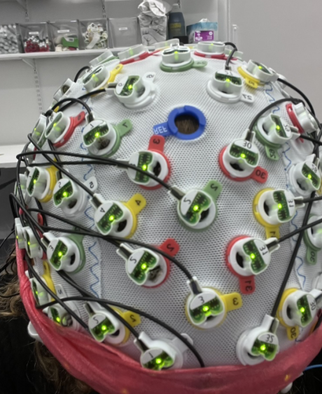
(VCL, 2025)This image shows an individual wearing the EEG cap after being appropriately fitted and measured. The lights on the electrodes are green to show the established connectivity between the scalp and the electrode after being gelled.
Artifacts and their Origins
Unfortunately, the EEG signals we wish to measure are very small (on the origin of \(\mu\)V). To measure signals this small, we need a sensitive amplifier. However, this sensitive amplifyer also picks up many signals that are unrelated to brain activity. We call these artifacts, or noise. The noise can come from a variety of sources including biological realities (such as eye movements, muscle movements, or sweating) or environmental electrical activity (such as a computer monitor an air conditioning unit in the recording room). We will cover some of the major types of artifacts and how to prevent them.
Line Noise
Electricity in our labs and homes is alternating current (AC), meaning that the current’s direction reverses itself. In the United States, it does this 60 times per second (60 Hz), while in other countries, current reverses at 50 Hz. (This is why you need an electrical adapter when you travel abroad). When the EEG amplifier picks up on this signal, we call it “line noise”. Everything that could be plugged into a wall can cause line noise. This noise appears as a periodic artifact that can obscure the much smaller neural signals of interest. Because line noise is external to the brain and highly predictable in frequency, it can often be reduced through careful experimental setup (e.g., shielding, grounding) and post-processing techniques such as filtering. We will discuss filtering more later in this chapter.
Muscle Artifacts
Because muscles also generate electrical signals, they can be another common source of artifacts in EEG. recordings. Although nearby muscles cause the most problems (e.g., the muscles near the scalp, facial muscles, and neck muscles), any muscle movement can show up. Muscle activity produces high-frequency noise—often in the 20–300 Hz range. This is unfortunate because the lower end of that range can overlap with neural oscillations of interest. These artifacts can be hard to remove because they are occasional. The best cure here is prevention, using careful participant instruction before the experiment to minimize movement.
Eye Blinks and Saccades
A muscle need not be large to cause large problems for EEG recordings. It turns out that the small muscles that control your eyes can contribute some of the largest EEG artifacts! These artifacts occur because the eyes act as electrical dipoles; when they move, they generate large voltage changes that are picked up by EEG electrodes, particularly those near the forehead and front of the scalp. Eyeblinks produce large, slow deflections, while saccades generate faster transients and can also induce muscle-related noise. Since these signals are much stronger than the neural activity of interest, they are crucial to deal with. In many labs, we take special measurements of eye activity from electrodes taped near the eyes to measure horizontal electrooculogram (HEOG), vertical electrooculogram (VEOG). What one does with these recordings is based on each lab’s philosophy. One school of thought is that raw EEG recordings should be minimally professed, so HEOG/VEOG recordings should be used only to help mark artifactual trials for removal. While this preserves the data with the fewest assumptions, it can lead to excessive data removal. The other school of thought uses the ICA algorithm (see below) to identify the patterns associated with eye movements and blinks and then reconstructs the data without these components. While this preserves the most data, it makes assumptions that not all researchers are comfortable with.
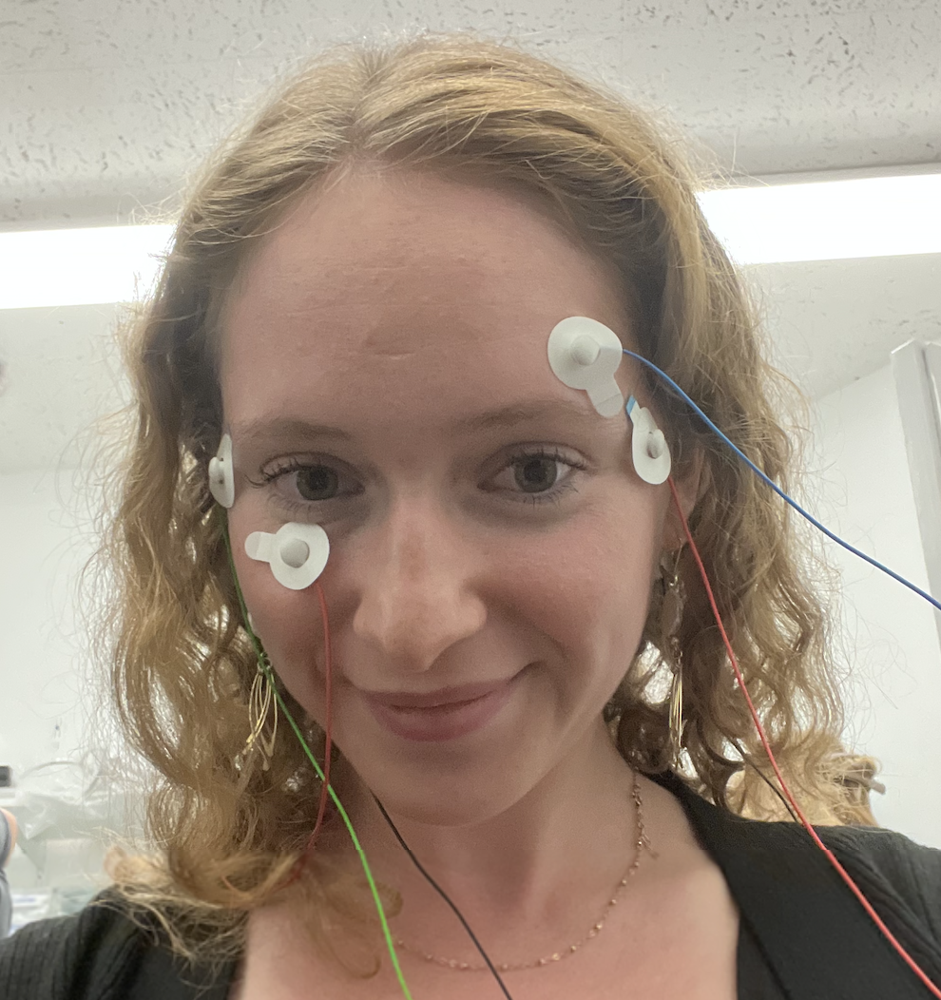
(VCL, 2025 — Hi Sage!)This image shows the placement of eye electrodes on the outer canthi (HEOGs) and the upper and lower eyes (VEOG).
Sweat Potentials
Sweat potentials are a lesser known but significant source of low-frequency artifacts in EEG recordings. These are caused by changes in skin conductivity as sweat accumulates under the electrodes. As sweat glands become active (especially in warm environments or when the participant is anxious) ions in the sweat alter the electrode-skin interface, producing slow drifts in the recorded signal (often below 1 Hz). To mitigate their impact, we aim to keep the recording room cool and dry.
Data Preprocessing
After collecting EEG data and before further analyzing it, it is important that we clean up the data. This these steps are collectively known as preprocessing.
Referencing and Re-referencing
EEG measures voltage, and voltage is the measure of the electrical potential between two things. Therefore, EEG records voltages relative to a reference, another electrode that stands as a “neutral” electrical signal. A reference can be anywhere, but some common references include a mastoid electrode, an electrode at the vertex (Cz), or linked earlobes. The choice of reference affects the appearance of the EEG signal but not the underlying neural activity. Because no single reference is truly neutral, many researchers re-reference the data during post-processing, often to the average reference—the mean of all electrodes on the scalp. Therefore, re-referencing the data is often the first step in processing EEG data.
Filtering
Noise removal is essential for clean EEG data. Muscle movements, line noise, sweat potentials, and other distractions can cause noise in the data. If the noise source is constant, it is easy to filter out during post-processing. Some terminology is in order. A high-pass filter allows voltages above a certain threshold to remain. For example, a high-pass filter of 1 Hz will filter out anything below 1 Hz, while keeping all of the higher frequencies. A low-pass filter consequently allows voltages below a certain threshold. For example, a low-pass filter of 50 Hz will filter out all frequencies higher than this value. Yes, the names are counterintuitive! Finally, a notch filter will take out frequencies around a specific frequency range. This is one common approach to dealing with line noise. Filtering should be done with care because it is literally changing your EEG data. In our lab, we tend to employ a low-pass filter of around 50 Hz to reduce the influence of line noise and muscular tension in the face and neck. While high-pass filters can be very helpful for slow drift and sweat potentials, we do not use them for studies involving decoding because this can create both false-positive and false-negative decoding results! (van Driel, Olivers, and Fahrenfort 2021)
Event Detection
In many cognitive studies, we use EEG to provide us with event-related potentials. These are the brain’s response to events, such as hearing a word, seeing a picture, or being asked to remember a set of items. To use this tool, we need to accurately detect when each event was presented to our participants. To align EEG data with these events, researchers typically insert triggers (electrical signals sent from the stimulus presentation computer to the EEG recording system) to mark the precise onset of each event. These triggers are recorded alongside the EEG data as event markers. However, delays and variability (latency jitter) can occur between the computer’s command to present a stimulus and the actual appearance of the stimulus on the screen. To address this, many researchers also use a photodiode (also called a photocell), a small light sensor placed on the display that detects the actual moment when a stimulus appears. The photodiode signal is recorded alongside the EEG, providing an accurate ground truth for stimulus onset. Combining trigger-based and photodiode-based event detection ensures precise temporal alignment, which is essential when analyzing fast neural responses such as ERPs.
Epoching and Baseline Correction
To segment the data into trials, we extract epochs using the event triggers. The specific epoch times depend on the timing of the experiment, but tend to include time before the event onset as well as the time that reflects the duration of a trial. For example, if we present an image on a screen for 500 ms, we will often create 600 ms epochs, with 100 ms of pre-stimulus baseline and the 500 ms trial time. The pre-event portion of the epoch (the baseline) provides a reference period to correct for slow drifts and background activity, and shows other researchers the intrinsic noise level of your data. (ERPs should roughly average to zero when there is no common event, and one should not get substantial decoding accuracy when there is nothing yet to decode!) After epoch extraction, we apply baseline correction, meaning we take the average voltage during the pre-stimulus period and subtract it from the entire epoch. This helps reduce slow drifts in the EEG data.
Independent Components Analysis (ICA)
Independent Component Analysis (ICA) is a computational technique used to separate mixed signals into their original, independent components. To make this more tangible, think of a band playing music in a room where different instruments—such as bass, flute, guitar, and voice—are performing simultaneously, each contributing uniquely to the song. Now imagine several microphones arranged around the room recording the performance. Each microphone will capture a mixture of the different instruments. ICA works by unmixing these signals, mathematically isolating each instrument so that we can hear them separately. The key assumption is that the separated components are statistically independent—meaning they do not influence each other.
In EEG data, ICA is used in a similar way to decompose the recorded signals into independent components. Some components reflect distinct brain processes (for example, visual processing may not be strongly related to a participant’s mind-wandering about lunch), while others reflect non-brain sources of noise, such as muscle activity or eye movements. We want to identify and remove components related to artifacts. For example, we can assume that eye blinks are largely independent from neural activity of interest; thus, one or more ICA components may predominantly reflect the blink artifact. Of course, the motor commands to blink originate in the brain, but these signals are relatively small compared to the large electrical potentials generated by the physical movement of the eyes themselves. Identifying which component(s) reflect ocular activity is an exercise in pattern recognition, informed by the component’s time course, spatial topography, and frequency content.
However, the practice of using ICA to remove artifact components is not without controversy. Some researchers argue that rejecting components risks distorting the underlying neural signals, especially if brain activity of interest partially overlaps with the artifact. Moreover, identifying which components to remove often involves subjective judgment, which can introduce variability and bias across studies.
Data Analysis
Now that we have our data in order, it’s time to get some insights into what the brain is doing. At this point, our data is in a very large array (electrodes by time points or electrodes by epoch time points by trials). For example, if we record from a 128-electrode system sampling at 1000 Hz for one hour (60 s/min * 60 min/hour * 1000 samples/s), we would have a 128x3.6 million matrix! Assuming we had 1000 trials in our experiment, and had already created epochs of 600 ms for each trial, this array might be 128x600x1000 (128 electrodes, 600 ms per trial, 1000 trials).
Frequency
Researchers often examine the frequency content of EEG signals to study ongoing brain activity. Frequency analysis involves decomposing the EEG signal into its constituent rhythms. For example, delta (1–4 Hz), theta (4–8 Hz), alpha (8–12 Hz), beta (13–30 Hz), and gamma (>30 Hz) bands each correspond to different cognitive states (and states of consciousness). This is done with the Fast Fourier Transform (FFT) that you can learn more about in Chapter (ref?)(fourier).
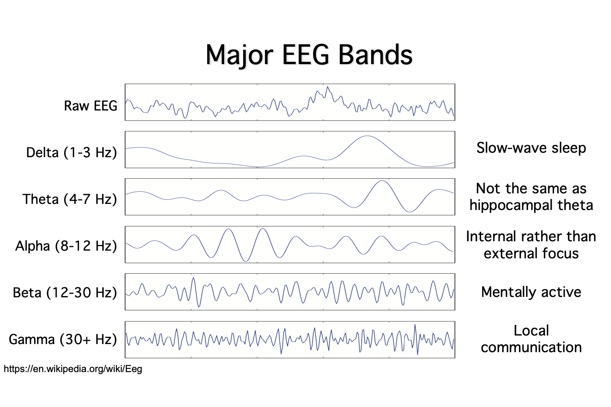
(Virtual ERP Boot Camp: Introduction to ERPs - Virtual ERP Boot Camp, n.d.) (“Electroencephalography,” 2025)
The above image shows different wave types and their frequency.
Traditional ERPs
In most cognitive applications, we want to measure how the brain responds to a particular stimulus or event. To achieve this, we measure event-related potentials (ERPs), which are electrical signals generated by the brain in response to specific events or stimuli. An “event code” is incorporated into the EEG recording, marking the time and identity of each event. ERPs specifically measure brain responses that are directly tied to sensory, cognitive, or motor events. While we often cannot pinpoint the exact brain regions responsible for the recorded voltages, ERPs still provide valuable insights into brain activity.
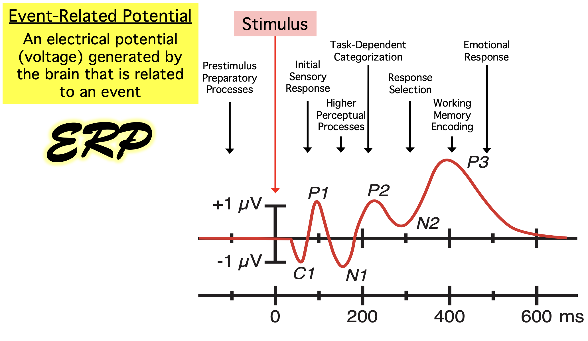
(Virtual ERP Boot Camp: Introduction to ERPs - Virtual ERP Boot Camp, n.d.)
During the EEG experiment, the researcher typically uses two computers, one for presenting the participant with stimuli and the other for actively monitoring and recording the EEG waves and event codes.
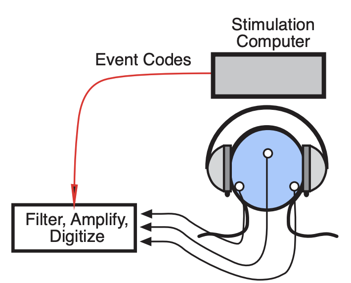
(Virtual ERP Boot Camp: Introduction to ERPs - Virtual ERP Boot Camp, n.d.)
Breaking Down ERPs into Epochs
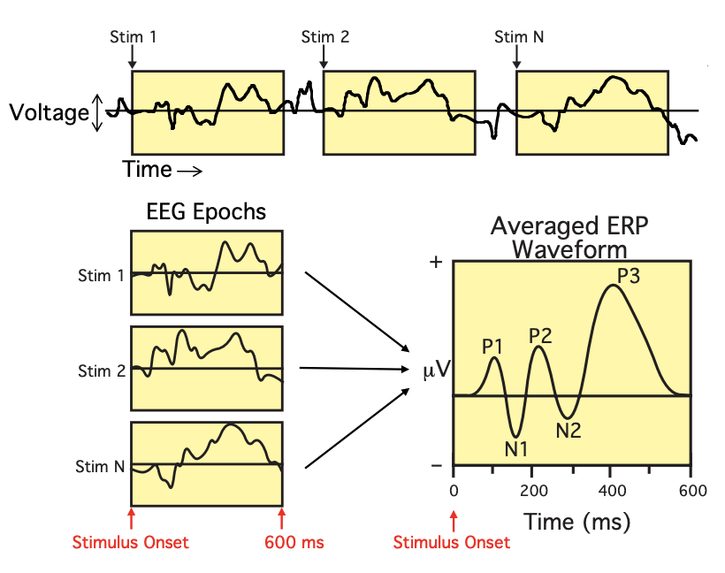
(Virtual ERP Boot Camp: Introduction to ERPs - Virtual ERP Boot Camp, n.d.)The diagram above is complex and may appear a bit overwhelming when understanding ERPs. Let’s break it down into manageable subparts to better understand what is going on!
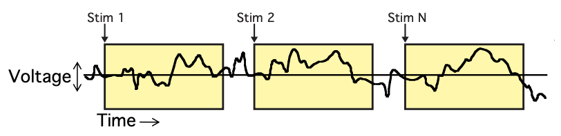
(Virtual ERP Boot Camp: Introduction to ERPs - Virtual ERP Boot Camp, n.d.)
In the diagram above, the black line represents a continuous recording of brain activity, showing voltage over time. “Stim 1” through “Stim N” represent different discrete stimuli, imagine these stimuli might be various images presented to the participant on a screen. The participant’s brain response to each stimulus is recorded in the EEG data, which is shown in the three yellow boxes. However, the EEG does not only capture the brain’s response to the stimuli; it also picks up noise. To the naked eye, it is impossible to distinguish which parts of the recording in these yellow boxes (epoch windows) are true responses to the stimuli and which are noise. Epoch windows are predetermined time frames where the researcher expects the brain to react to the stimuli.
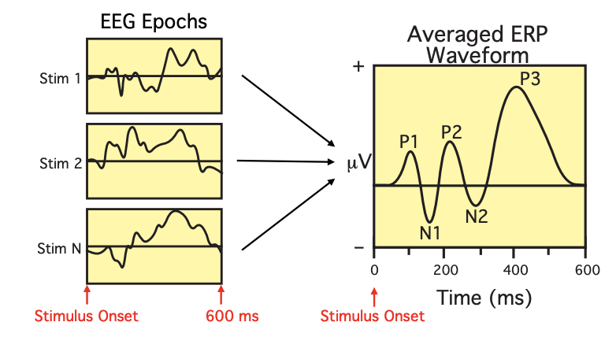
(Virtual ERP Boot Camp: Introduction to ERPs - Virtual ERP Boot Camp, n.d.)
Each epoch represents the time period starting when the stimulus is presented to the participant (time-locked to the stimulus onset) and continues for a predetermined duration, 600 milliseconds in this example. However, this duration can vary depending on the type of stimulus and the researcher’s prediction of how long the participant’s brain will need to react and produce an accurate response.
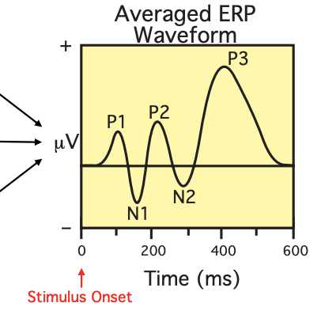
(Virtual ERP Boot Camp: Introduction to ERPs - Virtual ERP Boot Camp, n.d.)To filter out the noise in EEG epoch data, we average the brain responses to each stimulus. This process allows researchers to identify consistent patterns in brain activity and distinguish them from noise. By averaging multiple epochs, the random noise cancels out, revealing the more consistent brain response, which forms the event-related potential (ERP) waveform. The x-axis represents time in milliseconds, while the y-axis represents voltage in microvolts. P1 is the first positive peak following the stimulus, and N1 is the first negative peak. These are exciting to researchers because these ERPs are correlated with specific cognitive processes.
Types of ERPs: Stimulus-Locked Average vs. Response-Locked Average
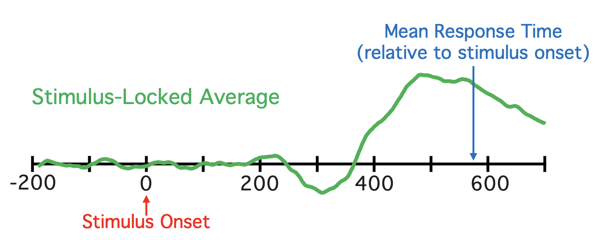
(Virtual ERP Boot Camp: Introduction to ERPs - Virtual ERP Boot Camp, n.d.)
Stimulus-Locked Potential: This type of ERP is time-locked to the presentation of the stimulus. Typically the epoch begins a few hundred milliseconds before the stimulus is presented and ends a few hundred milliseconds after the stimulus is presented.
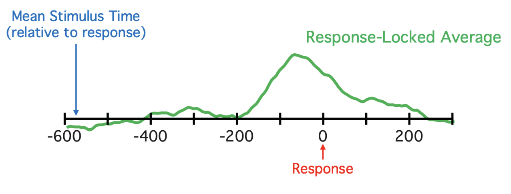
(Virtual ERP Boot Camp: Introduction to ERPs - Virtual ERP Boot Camp, n.d.)Response-Locked Potential: This type of ERP is time-locked to when the brain demonstrates a response to the stimulus presented to the participant.
Further Reading
We recommend the following sources for more information on this topic:
Steven J. Luck’s ERP Boot Camp course.